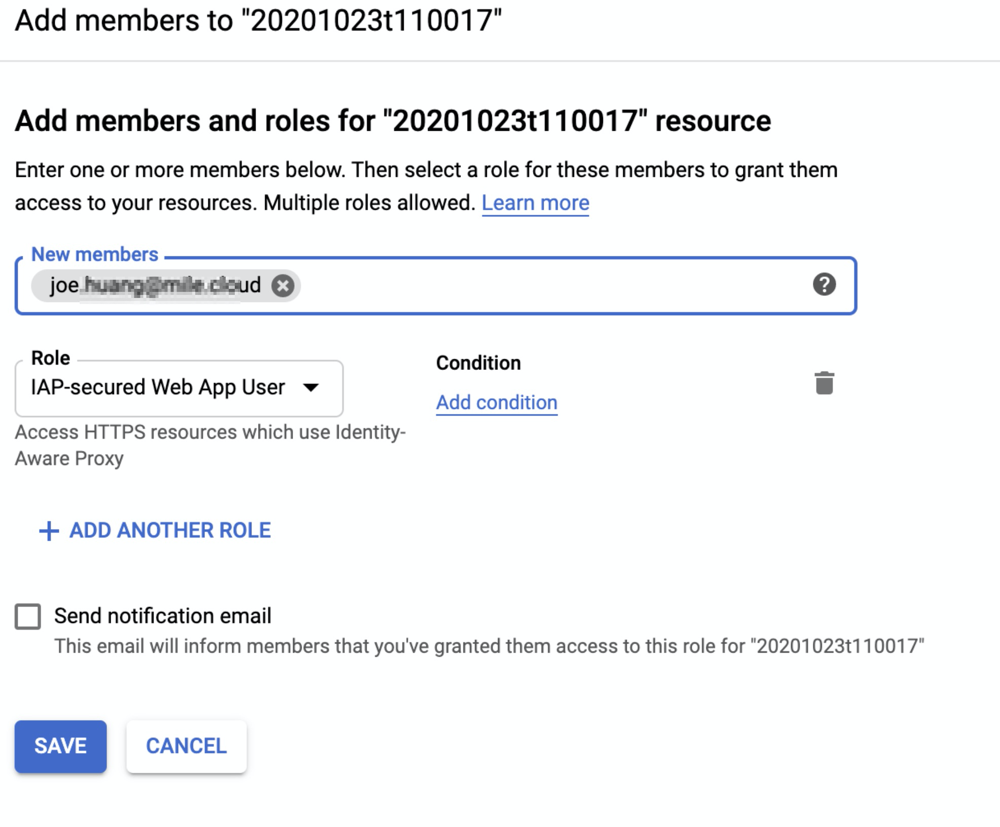
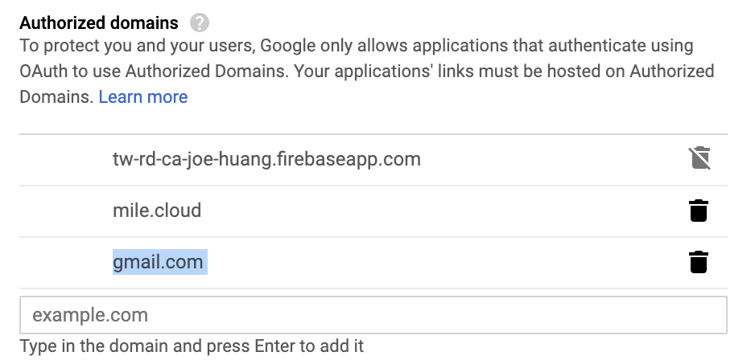

[GCP] 網頁透過Cloud IAP保護 | Giving it a Try to let Cloud IAP protect your system (下)
Status: in 75%
今天Cloud IAP的分享，它的應用很廣泛，我將分享應用在linux, windwos伺服器存取的保謢，以及網頁(ednpoint)存取的保護。IAP手法很多，常用的連線IAP認證(--tunnel-through-iap); Port轉換)start-iap-tunnel)，最後GAE網頁，則是使用IAP-secured Web App，最後也交叉設定OAuth consent screen，使保護更佳彈性。
本文是延續<你還在用VPN連線嗎？ 快點試試Cloud IAP，資安手法大開公>(上)集，完成GAE 採用Cloud IAP的分享，故省略前言
網頁透過Cloud IAP保護 | GAE 為例
step1. deploy ngnix web by GAE
- 準備一個
python-docs-samplescode - 使用GAE部署範例網頁
1 | #1 prepare python sample |
2 | gsutil -m cp -r gs://spls/gsp067/python-docs-samples . |
3 | cd python-docs-samples/appengine/standard_python3/hello_world |
4 | |
5 | #2 deploy ur app |
6 | gcloud app deploy |
step2. Ensure Website is running
- 確認部署完成訊息，會產生
endpoint - 基本上這個網頁
[tw-rd-ca-joe-huang.df.r.appspot.com](http://tw-rd-ca-joe-huang.df.r.appspot.com/)是接受所有普羅大眾的直接存取

測試#1. Disable IAP Allows Any Access
測試網頁
我使用的是另外的私人帳號 → 可以正常存取網頁
tw-rd-ca-joe-huang.df.r.appspot.com
step3. Enable IAP
設定路徑：「IAP頁面」→「HTTPS RESOURCES」 → 「Configure Consent Screen」
- 請選擇1.
HTTPS RESOURCES

step4. 選定GAE 運行的網頁，並啟用IAP
- 選擇GAE後，指定
endpoint - 剛設定後，生效需要2分鐘的等待
- 最後你可以看到右邊
IAP status→ ＯＫ
Google 帳戶登入
一旦啟用IAP，你就必須登入google account，為什麼？因為IAP 就是結合Google 認證中心幫忙把關身份認證阿
現在登入網頁的endpoint，都會直接跳轉到
「Google 帳戶登入」
測試#2. Enable IAP Allows DOMAIN Aceess only
測試網頁
這次一樣是使用私人帳號
結果 #2
結果會顯示
403或是You don't have access訊息
因為我們尚未把personal account 加入IAP-tunnel-web因為在一開始User進門的時候就被IAP擋在門外了
You don't have access警告訊息
測試#3. Extra USER grant “IAP-secured Web App“ permission
此時測試，要授權私人帳戶，可以進入IAP-secured Web App
- 選定
endpoint，再點選右上的HIDE INFO PANEL - 點選
Add Member
加入私人帳戶與網域帳戶在這個
endpoint之上，授權條件請選IAP-secured Web App+網域帳戶

結果#3. You don’t have access
加入
IAP-secured Web App網域帳戶，可以正常存取網頁可是我已授權
IAP-secured Web App，但是仍然有問題？
測試#4 OAuth 設定internal, external
我們可以跳轉至「OAuth consent screen」，去開啟更細層的保護
現在的情況，即使是有了
IAP-secured Web App，但是OAuth還是擁有自已的保護你可以設定這個endpoint是可以允許
internal或是externale.g.
Authorized domains，未把gmail加入，在預設時它是不存在的
結果#4. External USER access Endpoint
- 測試4，我們試著加入以下OAuth的參數
- Application type →
public, Authorized donains →gmail.com
Application type 設定
Authorized donains設定
外部私人帳號，此時終於可以進入Endpoint!
進階OAuth 設定
要跳轉至「OAuth consent screen」，請務必先選擇
HTTPS RESOURCES第一步是設定User Type來自內部或是外部
OAuth consent screen 項目說明
如果點選Configure Consent Screen，可以登入頁的警告訊息，您可以設定以下的訊息
- Application type
開公網站內容(Public)：你可以從任何的google的帳戶授權，即可以登入網頁 Any Google內部授權(Internal)：僅接授你公司內部的網站
- 可以接受的網堿
Authorized domains：這邊可以指定除公司網域之外的網域名稱 - 頁面logo呈現的圖示
Reference
[1] Cloud IAP for TCP forwarding
https://cloud.google.com/iap/docs/tcp-forwarding-overview?hl=zh-tw
[2] Known limitations
https://cloud.google.com/iap/docs/using-tcp-forwarding?hl=zh-tw#known_limitations